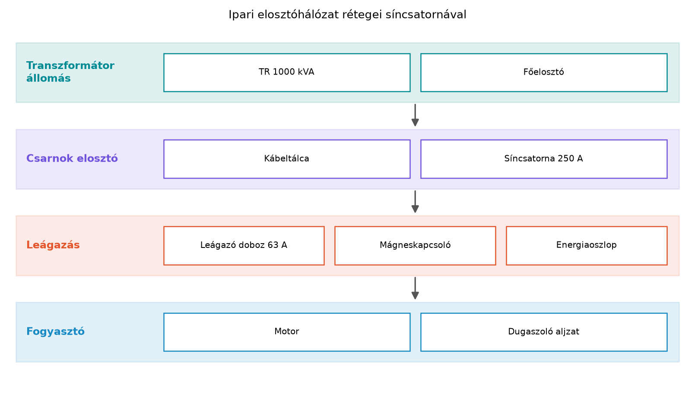

Statikus változat (mint a PDF-ben)
Ipari csarnokban a villanyszerelő ritkán találkozhat kész, falba vésett nyomvonalakkal. A termelési gépek áthelyezése, új gép beállítása vagy egy légtechnikai rendszer bővítése gyakran azt jelenti, hogy néhány óra alatt kell energiaellátást kiépíteni, méghozzá úgy, hogy az később is rugalmasan átrendezhető legyen. Ha minden gépet külön kábellel, közvetlenül a főelosztóból táplálunk, akkor a kábeltenger áttekinthetetlenné válik, a javítás lassú lesz, és a kábelek rögzítetlenül, rossz szellőzéssel túlmelegedhetnek. A síncsatorna, az energiaoszlop, a kábeltálca és a kábelpadló éppen erre a feladatra készült: rendezett, újrakonfigurálható, jól szellőző és biztonságos elosztási utat ad.
Ha szerelőként három gépet kell bekötni egy csarnokban, a következő kérdésre kell választ adni: milyen gerincvezetéket fektessen, hová tegye a leágazási pontokat, és milyen szerelési mód biztosítja a kábelek hőleadását. Ez az alfejezet ezeket az eszközöket és szerelési technológiákat tanítja meg.
A következő rétegábra egy tipikus csarnoki elosztást mutat. A transzformátorból induló kábel először egy kábeltálcán fut a főelosztótól a síncsatornáig. A síncsatorna a csarnok hosszában flexibilis energia-gerincet alkot. Erről leágazó dobozokkal lehet leválasztani a munkagépek áramköreit, kisebb energiaoszlopokat pedig közvetlenül a tálcáról vagy a síncsatorna leágazó dobozából táplálni.

Ábraolvasás. Fentről lefelé haladva minden réteg egy-egy elosztási szintet jelent. A villamos teljesítmény a felső szintről lefelé folyik, a készülékek a rétegekben mint csomópontok jelennek meg. A síncsatornán lévő leágazó doboz a rugalmas csatlakozási pont, ahonnan már hagyományos kábellel vagy energiaoszloppal lehet a gépet ellátni. A kábeltálca nem áramot szállít, hanem a kábeleket tartja.
Motiváció. A csarnokban hétről hétre új masinákat állítanak be, vagy épp elvisznek egy gépet. A falba vésés lassú, koszos, és nem is ad rugalmasságot. Ehelyett ipari környezetben a tápsínt, azaz síncsatornát használnak.
Definíció. A síncsatorna (busway / busbar trunking system; régebbi magyar szóhasználatban gyakran „sínes elosztó” vagy „tápsín”) olyan előregyártott, zárt vagy félig zárt elosztórendszer, amelyben a villamos energiát szigetelt, párhuzamosan futó réz- vagy alumíniumgyűjtősínek szállítják. A gyűjtősíneket mechanikusan védő, általában fém vagy más nem éghető tokozás veszi körül. A síncsatornára leágazó dobozokat vagy csatlakozó egységeket lehet szerelni, így a megcsapolási pont áthelyezhető, bővíthető.
Elemek. Egy teljes síncsatornás rendszer fontosabb elemei:
Ábraolvasás. Az 1. keresztmetszet a síncsatorna: maga az energiavezető, a fémtokozásban öt párhuzamos sínnel; a rápattintott leágazó doboz érintkezői közvetlenül a sínekre csatlakoznak, benne a leágazás védelmével. A 2. és 3. keresztmetszet a kábeltálca és a kábellétra: ezek csak tartószerkezetek, a kábeleket hordozzák. A tálcán a levegő a perforáción, a létrán a fokok között áramlik, ezért a létrán jobb a kábelek hűlése. Az alsó sáv a rögzítést mutatja: a konzolok és függesztők távolsága a fejezet szerint jellemzően 1,5–3,0 m, de ez gyártói adat. A HTML-kiadásban az ábra három lépésben játszható le.
Fontos szabály. A síncsatorna nem kábeltálca. A kábeltálca a kábelek tartószerkezete, a síncsatorna maga az energiavezető. Ezért a síncsatorna névleges árama annak az áramnak felel meg, amelyet tartósan elvisel, és amelyet a gyártó a környezeti hőmérséklet, a szerelési mód és a tokozás anyagának függvényében megad.
Számítás. Egy csarnokban 12 darab, egyenként 2,2 kW-os, 230 V-os fűtőszalagot kell ellátni egy háromfázisú (L1–L3, N, PE) síncsatornáról. Az egyfázisú fogyasztókat a három fázisra egyenletesen osztjuk el, fázisonként 4 darabot. A fűtőszalag ohmos terhelés, ezért . A mértékadó a legterheltebb fázis árama:
Szabály. Egyfázisú fogyasztóknál a legterheltebb fázis árama a mértékadó, ezért a fázisok kiegyenlítésére törekszünk; ha mind a 12 fogyasztót egy fázisra kötnénk, az áram lenne, vagyis háromszoros fázisáram és erős aszimmetria lépne fel, és a síncsatornát erre a háromszoros áramra kellene méretezni.
Bővítési tartalékkal () egy névleges áramú síncsatorna megfelel (a gyártói választéktól függően). A leágazó dobozokat ezután úgy kell méretezni, hogy a leágazó áramkörében is teljesüljön az elv.
Megjegyzés. A síncsatornák névleges árama jellemzően 25 A-tól több ezer amperig terjedhet a gyártói választékban. A pontos típust és a szakaszok hosszát a gyártói katalógus és az MSZ EN 61439 sorozat szerinti készülékadatok alapján kell kiválasztani (ellenőrizendő: aktuális gyártói adatlap és szabványkiadás).
Továbbvitt eredmény. A síncsatorna névleges áramát és a leágazó dobozok védelmi osztályát a Méretezés: terhelés, feszültségesés és zárlat egyszerű esetekben alfejezetben használjuk fel, amikor a terhelési láncot és a zárlati védelmet a teljes ipari hálózatra kiterjesztjük.
A csarnokban nem mindig lehetséges a mennyezetre vagy a tartószerkezetre szerelt síncsatorna. A padlószinten dolgozó munkások és gépek esetében bizonyos munkaállomásokhoz energiaoszlopokat (power distribution column / service pole) használunk. Ezek az oszlopra szerelt, több dugaszoló aljzatot és védőkapcsolót tartalmazó elosztóegységek, amelyeket rendszerint a padló alatti vagy feletti kábelszerelésből táplálunk.
Energiaoszlop alkalmazása. Az energiaoszlop jól szolgál laboratóriumokban, műhelyekben, gépcsoportok közelében. Felső részén általában a bejövő kábel csatlakozik, alsó részén vagy több magassági szinten a dugaszoló aljzatok, esetleg védőkapcsoló vagy kismegszakító van. A rögzítést a padlóhoz vagy a mennyezethez, illetve a falhoz kell kialakítani. Az energiaoszlop szerelése során a bejövő kábelt mechanikusan védeni kell, és a kábelsaru kötéseket ellenőrizni kell a későbbi rángatásból adódó sérülések ellen.
Falba süllyesztett megoldások. Falazott falszerkezetben előszeretettel használnak süllyesztett szerelődobozokat és falba süllyesztett csatornákat (a falon kívüli vezetékcsatorna külön, falon kívüli szerelési mód). A süllyesztett dobozok védettsége fontos; a padlószinthez közeli, freccsenő víz vagy vegyszer ellen legalább IP44 védettségre lehet szükség, de a pontos érték a környezettől függ (ellenőrizendő: környezeti feltételek és aktuális szabvány). A falba süllyesztett dobozok előnye a mechanikai védelem és az esztétikus megjelenés, hátránya a kisebb hőleadás és az utólagos bővíthetőség nehézsége.
Padlóba épített megoldások. Irodai és ipari terekben gyakori a padlócsatorna (flush floor trunking) és a padlódoboz. A padlócsatornát a betonlemezbe vagy az esztrichbe süllyesztik; a kábeleket a csatornában húzzák, a kivezetésekhez padlódobozokat szerelnek. A padlódoboznak a járó terhelést (pl. 3 kN terhelés) és a vízbehatolás elleni védelmet kell biztosítani. A csatorna fém fedelét úgy kell rögzíteni, hogy ne zörögjön, ne billenjen, és hőtágulás esetén se szoruljon. A padlóba épített rendszernél a kábelek hőleadása rosszabb, ezért a terhelhetőséget a megfelelő szerelési mód szerint kell csökkenteni.
A kábeltálca és a kábellétra a legelterjedtebb tartószerkezetek ipari környezetben. A kábeltálca (cable tray) általában perforált acéllemezből készült, U-alakú vagy lapos tálca. A kábellétra (cable ladder) két hosszanti tartóból és a közéjük hegesztett vagy csavarozott fokokból áll, ezért a levegő hozzáférése a kábelhez jobb, a hosszabb tartószerkezeti távolságok is áthidalhatók.
Definíció. A kábeltálca és a kábellétra olyan tartószerkezet, amely a kábeleket meghatározott nyomvonalon, mechanikailag védett módon, a levegő hozzáférhetőségét megtartva vezeti. Nem villamos vezető, hanem szerelési mód.
Rögzítési elvek. A tálcát vízszintesen és függőlegesen is lehet szerelni. A rögzítőelemek:
Ha a fém kábeltálcát a terv szerint az egyenpotenciálú (EPH) rendszerbe vonják, vagy védővezetőként használják, a toldásoknál a villamos folytonosságot biztosítani kell (áthidaló kötés, gyártói összekötő). A bekötés szükségessége a tervtől, az alkalmazott kábelektől és a környezettől függ (ellenőrizendő: MSZ HD 60364-4-41, -5-54, gyártói adatok).
Rögzítési távolság. A konzolok és függesztő szárak távolsága a tálca teherbírásától és a kábelköteg tömegétől függ. Jellemző gyakorlati távolság 1,5–3,0 m közötti, de a pontos értéket a gyártói adatlap és a statikai követelmény határozza meg (ellenőrizendő: gyártói terhelési táblázat). Ha a tálcán túl sok kábel van, a konzol behajlik, a toldások meglazulnak, és a kábelek letörnek.
Szerelési terv készítése. A kábeltálcás és síncsatornás elosztás szerelése előtt nyomvonaltervet kell készíteni. A terven rögzíteni kell a megtámasztási pontokat, a dobozok és leágazások helyét, a kereszteződéseket, a tűzgátló áttöréseket és a későbbi bővíthetőségi tartalékot.
Gyakorlati recept: Síncsatornás elosztás szerelési tervének lépései
Gyakorlat. A tanműhelyben szerelési tervet készíthetsz egy képzeletbeli csarnokhoz. Vegyél fel 6 munkagépet, 4 darab 3 kW-os és 2 darab 5,5 kW-os motort, -vel. Az egyszerűsítés kedvéért a motorok hatásfokát most 1-nek vesszük: , így ; tartalékkal , vagyis legalább -es síncsatorna kell. A motorok hatásfokát (például ) figyelembe véve (ellenőrizendő: gyártói adatlap).
A kábelek működés közben melegszenek. Ha a kábel hőleadása gátolt, a szigetelés hőmérséklete a megengedett fölé emelkedik, ami idő előtti öregedéshez, rövidzárlathoz vagy tűzhöz vezethet. Ezért a kábeltálcás, kábellétrás és síncsatornás szerelésnél a szellőzést soha nem szabad elzárni.
Hőterhelés. A csoportba fektetett kábelek egymást melegítik. A tálcán vagy létrán a kábelek közti hézagok, a perforáció és a levegő mozgása javítja a hőleadást, de a csoportosítás miatt a terhelhetőséget javító-, illetve csökkentő tényezőkkel kell módosítani. A pontos tényezőket az MSZ HD 60364-5-52 szerinti szerelési módok és táblázatok adják meg. Ez a méretezési lépés a Méretezés: terhelés, feszültségesés és zárlat egyszerű esetekben alfejezetben visszatér.
A kábeltálca szellőzése. A perforált tálcán a levegő a kábel alá is bejut, ezért jobb a hőleadás, mint zárt csőben. A tömör tálca (nem perforált) viszont csökkenti a hőleadást; a kábeltálcás szerelési módnál a szabvány szerint különböző referenciaértékek érvényesek. Tervezési ökölszabály, hogy a kábelek közötti szabad légrést ne tömd ki teljesen, és a kábelköteget ne fesd le.
Tűzterhelés. A kábelek éghető szigetelőanyagokat tartalmaznak. A kábeltálcákon összeérő kábelnyalábok a tűz terjedésének útjai lehetnek. Ezért tűzgátló falakon, födémeken való átvezetéskor minősített tűzgátló anyaggal kell lezárni a nyílást, és a kábelrendszerben tűzvédelmi megszakításokat, például tűzálló kőzetgyapot párnákat vagy tűzgátló habot kell alkalmazni. A függőleges kábelszerelésnél a kábelek tűz közbeni önsúlyát is figyelembe kell venni; a rögzítéseknek biztosítaniuk kell, hogy a kábel ne essen le és ne terjessze a tüzet.
Figyelem. A síncsatorna tokozása, a kábeltálca és a kábellétra anyaga gyakran fém, ami jó szellőzést és mechanikai védelmet ad, de tűz esetén felmelegszik. A tűzgátló átvezetéseknél a fémbordás szerkezetet is le kell zárni, hogy a tűz és a füst ne tudjon átjutni.
Szabvány. A kisfeszültségű berendezések vezetékválasztásának alapdokumentuma az MSZ HD 60364-5-52. Ez ad iránymutatást a szerelési módokhoz (kábeltálca, kábellétra, védőcső, szabad vezeték), a terhelhetőségi referencia-értékekhez és a csoportosítási tényezőkhöz. A gyűjtősínes elosztórendszerekre (síncsatornák) jellemzően az MSZ EN 61439 sorozat vonatkozik, azon belül az elosztóberendezések és a gyűjtősín-csatornák vizsgálatai, melegedési határai és készülékkombinációi (ellenőrizendő: pontos szabványszám, jellemzően MSZ EN 61439-6). A kábeltálcákra és kábelétrákra mint kábelrendszer-tartószerkezetekre gyakran az MSZ EN 61537 sorozat utal (ellenőrizendő: aktuális kiadás és pontos szám).
Magyar gyakorlat. Régi terveken előfordulnak az „MSZ 1600”, „MSZ 2364” jelölések. Ezeket a szabványokat lecserélték; a régi rajzon a megjegyzés csak arra utal, hogy a dokumentáció korábbi kivitelben készült. A szerelő új munkánál a hatályos MSZ HD 60364 sorozat szerint jár el.
A szerelés biztonsága. Hálózati feszültségű síncsatornát és kábeltálcát csak jogosult, arra képesített személy szerelhet. A tanuló ezt gyakorlatban csak tanműhelyi, törpefeszültségű modelleken vagy jogosult oktató közvetlen felügyeletével végezheti.
Cél: Síncsatorna-modell összeszerelése és egy kábelköteg kábeltálcára való szakszerű fektetése, a szerelési terv lépéseinek begyakorlása.
Eszközök és anyagok: - törpefeszültségű síncsatorna-modell vagy gyártói demonstrációs sín, - néhány darab (pl. 5 db) különböző színű, 1,5–2,5 mm²-es hajlékony vezeték a kábelköteg modellezéséhez, - kábeltálca-darab vagy perforált lemez, konzolok, csavarok, ütköző anyák, - egyenáramú, max. 24 V-os próbafeszültség forrás, pl. tanulműhelyi tápegység, - multiméter, csavarhúzó készlet, hálózati munkánál kétpólusú feszültségvizsgáló (MSZ EN 61243-3 – ellenőrizendő: aktuális kiadás); a fázisceruza feszültségmentesség megállapítására nem használható.
Biztonsági korlát. A gyakorlat kizárólag tanműhelyi, legfeljebb törpefeszültségű környezetre vagy jogosult oktató felügyeletére vonatkozik. Hálózati feszültségen önállóan ne dolgozz.
Az öt biztonsági szabály a megkezdés előtt: 1. Kapcsold le a tanműhelyi tápegységet. 2. Biztosítsd a visszakapcsolás ellen (lakattal vagy az oktató utasítása szerint). 3. Kétpólusú feszültségvizsgálóval (törpefeszültségű modellnél multiméterrel) ellenőrizd minden pólus között, valamint a PE felé is a feszültségmentességet; a műszer működését előtte és utána ismert feszültségforráson próbáld ki. 4. Ahol a gyakorlatban indokolt, földeld és rövidre zárd a munkaszakaszt. 5. A szomszédos, feszültség alatt lévő részeket fedd le, ha vannak ilyenek.
Lépések:
Ellenőrzési pontok: - A síncsatorna toldásánál nincs elszíneződött, meglazult csavar. - A leágazó doboz érintkezői nem lógnak le. - A kábelek színei a szabvány szerintiek (fázis barna/fekete/szürke, nulla világoskék, védővezető zöld-sárga). - A kábelköteg a tálcán nem lép ki a tálca szabad pereme fölé. - A multiméteres ellenállásmérés nem mutat szakadást.
Dokumentálás: Készíts egyszerű kapcsolási vázlatot a síncsatornáról, a leágazó dobozról és a kábelezésről. Jelöld a rögzítési pontok távolságát és a kábelek keresztmetszetét.
Egy csarnokban egy fűtőszalag-sor folyamatos leállását tapasztalták. A szerelő a gépsor betáplálását egy régi, elhúzódó kábeltálcán vizsgálta. A kábelek szorosan egymás mellett, több rétegben feküdtek, a tálca pereme lefelé fordult, a levegő nem járhatta át őket. A csatlakozó dobozban a leágazó vezetékek összeértek, a kábelszigetelés helyenként elszíneződött. A műszeres mérés hőterhelésre gyanúsan magas hőmérsékletet mutatott, és a túlmelegedés miatt a kábelszigetelés ellenállása lecsökkent. A hibát nem a kismegszakító okozta, hanem a rossz kábelfektetés: a kábeleket nem lehetett kellően szellőztetni.
Tanulság. A kábeltálca nem „kábeltartó rekesz”, hanem hőleadó felület. A szakszerűtlenül egymásra dobált kábelek a névlegesnél jóval kisebb terhelhetőséggel bírnak. A javítás egy új, szellős kábeltálca-szakasz, kábelköteg-elválasztó lécek, kábelbilincsek és a csoportosítási tényező figyelembevétele volt.
1. Hiba: Kábeltálca helyett síncsatornát kever a megrendelő, vagy fordítva. A szerelő rutinból kábeltálcát kínál, pedig a csarnok flexibilis energiaellátást igényel. Helyes gyakorlat: a síncsatorna a teljesítmény-gerinc, a kábeltálca a nyomvonalkövető kábelszerelés. A feladat jellege dönt.
2. Hiba: A leágazó doboz védővezető-érintkezőjét nem köti be. A ház vagy a PE-sín folytonossága megszakad. A hiba az áramütés elleni védelem kialakulását akadályozza. Helyes gyakorlat: a fémházat és a síncsatorna-köpenyt a terv szerint be kell kötni a védővezetői/EPH-rendszerbe, a kábeltálcát pedig akkor, ha a terv ezt előírja vagy védővezetőként használják (ellenőrizendő: MSZ HD 60364-5-54, tervdokumentáció); és a PE-érintkezőt minden szerelési ponton ellenőrizni kell.
3. Hiba: A kábeltálcát túlterheli, a konzolokat túl ritkán rakja fel. A tálca behajlik, a kábelek húzás közben megfeszülnek, a toldások megrepedhetnek. Helyes gyakorlat: a rögzítési távolságot a gyártói terhelési táblázatból válassza, és a szerelést statikailag is ellenőrizzék.
4. Hiba: A tűzgátló áttörést utólag, nem minősített anyaggal zárja le. A faláttörés nyitva marad, a tűz és füst szabadon terjedhet. Helyes gyakorlat: a falon átmenő kábelt és a tálcát minősített tűzgátló anyaggal kell lezárni, a gyártói utasításoknak megfelelően.
5. Hiba: A síncsatorna nem használt leágazási nyílását nyitva hagyja. Az IP védettség csökken, az érinthető gyűjtősín áramütést okozhat. Helyes gyakorlat: a nem használt leágazási nyílásokat a gyártói zárófedéllel (takaróelemmel) kell lezárni; leágazó dobozt csak a ténylegesen használt pontokra szerelünk, a felszerelt doboz fedele zárva legyen.
1. feladat (A). Nevezd meg a síncsatornás elosztórendszer legalább négy elemét, és mondd meg, mire való a leágazó doboz.
2. feladat (A). Egy 230 V-os, egyfázisú, 2,2 kW-os (tengelyteljesítmény) motort, amelynek hatásfoka és teljesítménytényezője , kell ellátni leágazó dobozzal. Mekkora a felvett üzemi áram, és milyen kioldási jellegű kismegszakítót választanál?
3. feladat (B). Egy csarnok síncsatornáját 8 darab, egyenként 1,1 kW-os, 230 V-os fűtőlámpa fogja táplálni (ohmos terhelés, ), a lámpákat a három fázisra 3/3/2 darabos bontásban kötik. Mekkora legyen legalább a síncsatorna névleges árama, ha 25% bővíthetőségi tartalékot is figyelembe akarsz venni?
4. feladat (B). Tervezz kábeltálca-szélességet: 10 darab, egyenként 13 mm átmérőjű kábelt kell fektetni egy sorban (egy rétegben), 40% megengedett töltési tényezővel. A tálca belső magassága 60 mm. Mekkora legyen a minimális belső szélesség? (Vedd az egyszerűség kedvéért a kábelek keresztmetszetét téglalapnak.)
5. feladat (C). A Méretezés: terhelés, feszültségesés és zárlat egyszerű esetekben témakör előkészítéséhez: miért fontos, hogy a síncsatornás és kábeltálcás szerelésnél a csoportosítási tényezőt és a szerelési módot pontosan ismerjük? Fogalmazd meg, mit számolnánk ezekből a terhelhetőségi láncban.
6. feladat (D). A gyakorlati útmutató lépései alapján írd le, hogyan ellenőriznéd a síncsatorna-leágazás PE-folytonosságát multiméterrel.
Önellenőrzés – válaszok
1. feladat (A). Tápcsatlakozó doboz, tápcsatorna elemek, leágazó doboz, véglezáró, tartószerkezetek. A leágazó doboz a gyűjtősínről leágazó biztosított csatlakozási pont, ahonnan a fogyasztóbetáp kábelezhető.
2. feladat (A).
A 2,2 kW a tengelyteljesítmény, a hálózatból felvett teljesítmény (lásd az Ipari elosztóhálózatok jellemzői és topológiája alfejezetben tanultakat). A 13 A-es kismegszakító ezért már kevés; a motor indítóárama (a motor névleges áramának, itt kb. 14 A-nek jellemzően 5–7-szerese, azaz kb. 70–100 A) miatt a választás nem magától értetődő. A C16 kismegszakító mágneses kioldása 5–10-szeres (-re vetítve, azaz 80–160 A) tartományban lehet, ezért nagy indítóáramú motornál a C16 leoldhat; ilyenkor D jellegű kismegszakító vagy – motornál inkább – a motoráramra (≈14 A) beállított motorvédő kapcsoló a jobb választás. A vezeték terhelhetőségétől függően (ellenőrizendő: MSZ EN 60898-1, gyártói adatlap).
3. feladat (B).
A legterheltebb fázison 3 lámpa van:
Tartalék 25%:
Tehát a gyártói választék legkisebb, megfelelő névleges áramú síncsatornája (pl. 25 A) elegendő. (Ha mind a 8 lámpát egy fázisra kötnék: , azaz 63 A-es csatorna – ezért a fázisok kiegyenlítése gazdaságos.)
4. feladat (B). Az egyszerűsített keresztmetszet:
A megengedett töltési tényező 0,4:
A tálca magassága 60 mm, így minimális szélesség:
A töltési tényező csak az egyik feltétel. Az egy rétegű (egy soros) fektetéshez a kábelek egymás mellett szélességet igényelnek, szellőzőhézaggal ennél többet; a szigorúbb feltétel a mértékadó, ezért 150 mm széles tálcát választunk (a töltés ekkor , azaz bőven a 40 % alatt).
5. feladat (C). A terhelhetőség () függ a szerelési módtól, a környezeti hőmérséklettől és a csoportosítástól. A síncsatornán vagy kábeltálcán a hőleadás jobb, mint falba vésve, de a kábelek csoportosítása miatt redukáló tényezővel kell számolni. A terhelhetőségi lánc:
A értéket a választott szerelési mód és a csoportosítás alapján kell meghatározni; ezzel a módszerrel a Méretezés: terhelés, feszültségesés és zárlat egyszerű esetekben alfejezetben a teljes csarnokra is kiterjesztjük az ellenőrzést.
6. feladat (D). A példa szerint a feszültségmentesítés után a multimétert ellenállásmérésbe állítva az egyik mérőzsinórt a leágazó doboz PE-kapcsához, a másikat a síncsatorna PE-sínjéhez, majd a kábeltálca fémvázához kell érinteni. Kis, stabil (nem ugráló) ellenállást várunk, néhány tized ohm nagyságrendben, a vezetőhossznak megfelelően (például 10 m, 2,5 mm²-es rézvezető ). Valós berendezésen a védővezető folytonosságát MSZ EN 61557-4 szerinti, legalább 200 mA mérőáramú műszerrel mérjük (ellenőrizendő: aktuális kiadás); a multiméter csak a tanműhelyi modellen elegendő. Szakadás esetén a csavart, a csatlakozó felületet, a festést és az érvéghüvelyt kell ellenőrizni, majd a mérést megismételni.
A síncsatorna előregyártott gyűjtősínes elosztórendszer, amely rugalmas, áthelyezhető energiaellátást biztosít az ipari csarnokban. A leágazó dobozokkal lehet becsatlakozni a gyűjtősínekre, ezért a rendszer könnyen bővíthető. A kábeltálca és kábellétra ezzel szemben a kábelek tartószerkezete, nem villamos vezető; a szerelési mód befolyásolja a hőelvezetést, ezért a terhelhetőség számításakor a csoportosítási és szerelési tényezőket ismerni kell. Az energiaoszlop, a falba süllyesztett doboz és a padlócsatorna a munkaállomások környezetében ad helyi csatlakozási pontot. Minden szerelésnél a rögzítési távolságot a gyártói terhelési adat határozza meg, a védővezető folytonosságot pedig minden toldásnál és leágazásnál ellenőrizni kell. A tűz- és hőterhelés kezelése a tűzgátló áttörések minősített lezárásával és a kábelek szellős elrendezésével valósul meg.
Továbbvitt eredmény. Az itt bemutatott síncsatornás, kábeltálcás és energiaoszloppos elosztóeszközök, valamint a hőterhelés és szellőzés alapelve a ve121 – Méretezés: terhelés, feszültségesés és zárlat egyszerű esetekben alfejezetben a terhelhetőség, a feszültségesés és a zárlati védelem együttes ellenőrzésének alapját képezik.
A szabványi keret: MSZ HD 60364-5-52 a kisfeszültségű berendezések vezetékválasztásához és szerelési módjaihoz, MSZ EN 61439 sorozat a kapcsolóberendezésekhez és a gyűjtősínes elosztórendszerekhez (jellemzően -6), MSZ EN 61537 sorozat a kábeltartó rendszerekhez (ellenőrizendő: aktuális szabványszámok és kiadványok). A csavarnyomaték, a kábeltálca teherbírása, a rögzítési távolság és az energiaoszlop védettségi osztálya típusfüggő; a konkrét értékekhez mindig a gyártói adatlap és a hatályos tűzvédelmi előírások az irányadók. Régi terveken előforduló MSZ 1600 és MSZ 2364 jelölések lecserélt szabványokra utalnak.